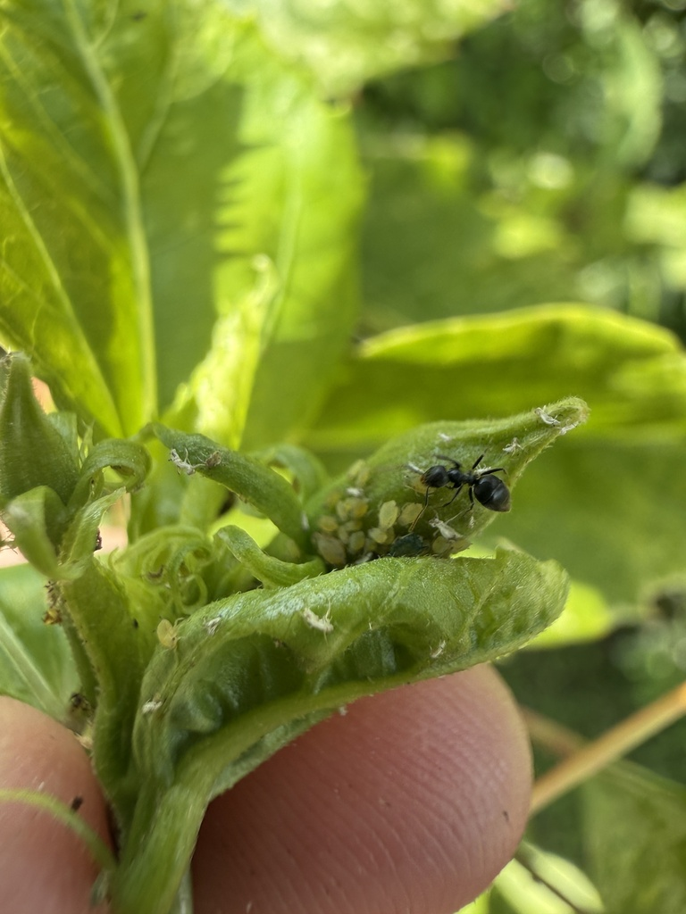

- In Florida's warm climate, melon aphids skip the egg stage entirely. Females give birth directly to live nymphs — all female, no mating required — and under optimal warm conditions a new generation can be ready to reproduce in as little as four to seven days.
- Color tells you almost nothing. The same colony can contain individuals ranging from pale yellow to olive to dark green, and a single aphid can change shade depending on the host plant and the season. The one reliable mark is the pair of small black tubes at the tip of the abdomen.
- Melon aphids are known from at least 60 host plants in Florida alone — spanning families such as Malvaceae, Cucurbitaceae, Rutaceae, and Solanaceae — one of the broadest host ranges of any aphid species.
- Ants and melon aphids have a working arrangement: the aphids produce a sugary liquid called honeydew, which the ants collect. In return, the ants actively deter predators and parasitoids that would otherwise cut the colony down.
Very small — adults typically 1 to 2 mm, roughly the size of a pinhead. Pear-shaped and soft-bodied. A hand lens or good macro camera will reveal details invisible to the naked eye.
Highly variable: pale yellow, yellow-green, olive, or dark green, sometimes nearly black. Color varies with season, host plant, and individual. Do not rely on color alone to identify this species.
Two small tubes project backward from near the tip of the abdomen. In this species they are always dark to black — a reliable diagnostic feature that holds across all color forms.
Most individuals in an established colony are wingless. Winged females are produced when the colony becomes crowded or the host plant declines; these disperse to found new colonies elsewhere. Both forms occur in the same colony.
Eyes are reddish. Legs are pale with dark tips. Antennae are noticeably shorter than the body length.
Melon aphids produce no sounds detectable to the human ear. Their primary mode of communication is chemical: alarm pheromones released when a colony member is disturbed prompt nearby individuals to drop or scatter.
Look on the undersides of leaves and on tender new growth — soft, green plant tissue is the preferred feeding site. You will usually see a dense cluster of tiny insects rather than a single individual. Check for the pair of small black tubes at the back of the abdomen; those black cornicles are the most reliable mark regardless of body color. Shiny, sticky honeydew on leaves below the colony, and any dark sooty mold growing on it, are good signs you are looking in the right place. Brown, papery 'mummies' mixed in with live aphids indicate parasitoid wasps are at work.
Plant sap, specifically phloem fluid drawn through piercing-sucking mouthparts inserted into leaves and stems. The aphid extracts carbohydrates and amino acids from the plant and excretes the excess sugars as honeydew. Host plants span an exceptionally wide range — at least 60 species in Florida — including key garden families: Cucurbitaceae (melons, gourds, cucumbers), Malvaceae (hibiscus, okra), Rutaceae (citrus), and Solanaceae (peppers, eggplant), as well as many ornamental and weedy species.
Flip over the leaves of cucurbits, hibiscus, citrus, peppers, and other soft-leaved plants in the garden. New shoot tips are especially productive search spots. Sticky, shiny patches on upper leaf surfaces are honeydew dripping from colonies feeding above. Look also for attendant ants moving up and down stems — they are often easier to spot first and will lead you directly to the aphids.
Year-round in Manatee County, though colonies tend to be largest and most visible in warm months. Population peaks track warm conditions combined with flushes of new plant growth. Activity is continuous through the day, as these insects feed rather than forage; there is no daily activity peak.
Feel free to look closely — a hand lens or phone macro mode reveals a surprisingly intricate insect. Handle infested leaves gently and replace them as you found them. No precautions needed.


- © Caitlin Sollazzo (CC-BY-NC), via iNaturalist